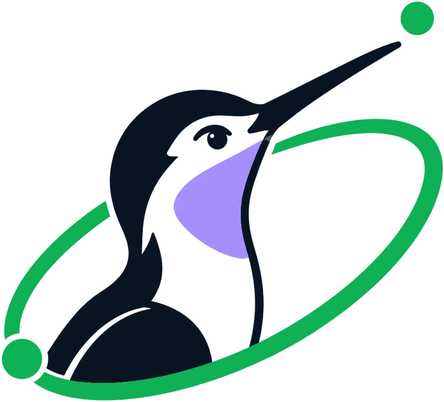

Un CRM con agente de IA para negocios que venden por WhatsApp
No pierdas clientes en WhatsApp
ni pagues anuncios a ciegas.

Imágenes ilustrativas creadas con IA · Kusi Hogar y sus datos son ficticios (demo)

Kinti · IA
con Rosa Huamaní · Comas
ejemplo
¿La freidora de 5 L llega a Comas? 😊
Hola, soy Kinti, asistente virtual de Kusi Hogar. Te respondo al toque y, si quieres, te paso con una persona del equipo.
Sí, Rosa: llega en 24 h y el delivery cuesta S/ 10. Hoy está a S/ 279. ¿Te paso con Diego para separarla?